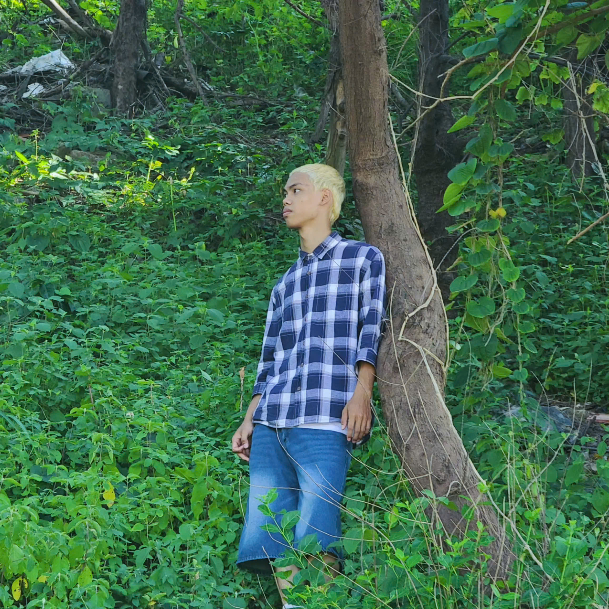

01
AI Engineering
Xây dựng luồng xử lý AI, kết nối tri thức và đánh giá chất lượng đầu ra.
MỘT CHÚT VỀ MÌNH
Xin chào, mình là
Công nghệ × Cuộc sống × Những chuyến đi
Mình thích tìm hiểu công nghệ, làm sản phẩm và khám phá những nơi mới. Đây là góc nhỏ để chia sẻ về bản thân và những điều mình đang học, đang làm.

Mình là Dũng, tốt nghiệp ngành Công nghệ thông tin, chuyên ngành Kỹ thuật phần mềm tại HCM-UTE.
Hiện mình đang tham gia chương trình Vingroup AI Talent — Cohort IV tại VinUniversity, theo hướng AI Business & Product. Mình thích tìm hiểu cách công nghệ hoạt động và thử đưa những điều đã học vào sản phẩm thực tế.
Ngoài những giờ học và làm sản phẩm, mình thích chạy bộ, cầu lông, trekking và khám phá những nơi mới.
Một phần hành trang của mình
trong quá trình học và làm sản phẩm.
Xây dựng luồng xử lý AI, kết nối tri thức và đánh giá chất lượng đầu ra.
Hiểu nhu cầu, xác định phạm vi MVP và chuyển yêu cầu thành luồng trải nghiệm AI.
Phát triển ứng dụng full-stack, REST API, xác thực JWT và phân quyền theo vai trò.
Làm việc với cơ sở dữ liệu, triển khai ứng dụng và phối hợp phát triển theo Agile.
Phát triển các backend API được giao bằng Java/Spring Boot; tìm hiểu kiến trúc và luồng dữ liệu của hệ thống. Làm việc theo Agile/Scrum và quy trình quản lý nhánh Git.
Chuyên sâu AI Business & Product (Track 1).
Chuyên ngành Kỹ thuật phần mềm.
GPA 3.47/4Một câu chuyện về công nghệ, một sở thích chung,
hay đơn giản là một lời chào — bạn có thể tìm mình ở đây.